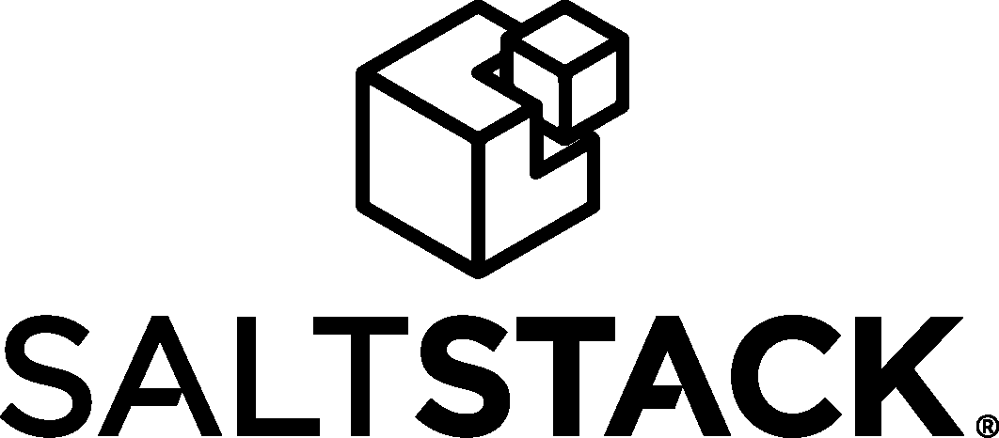
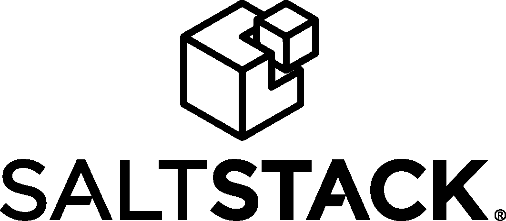

Devops
“Buscar un quote?”
Contenido
- Conceptos
- Infraestructura como Código
- Ejercicio
Conceptos
“Every developer or support person dreads a moment like this when they have to reconfigure the servers, because of the different aspects involved in the seemingly tedious process. But it doesn't always have be to like this.”
Ganado vs Mascotas
| "You name them and when they get sick, you nurse them back to health" | "You number them, and when they get sick you shoot them and get another one." |
Ganado vs Mascotas
| Nombres como miservidor.querido.com | Nombres como servidor1520.dominio.com |
| Amorosamente creados a mano. Únicos e indispensables. | Iguales a cualquier otro servidor. Reemplazables. |
| Días/semanas en crearse. Puede requerir proyectos de migración para recrearse en otro lado | Se crean, modifican, destruyen y recrean en minutos a partir de scripts. |
Ganado vs Mascotas
| Se modifican sólo en ventanas de mantenimiento y por personas con privilegios especiales | Se modifican en cualquier momento mediante scripts que no requieren privilegios. |
Ganado vs Mascotas
| Varios requipos involucrados en aprovisionar un solo ambiente. | Un solo click cubre varios niveles (computación, redes, almancentamiento, otros) |
| Es estática, requiere excederse en la capacidad planeada para soportar picos | La infraestructura es elástica y escala de manera automática durante picos. |
Fénix vs. Copo de Nieve
| "You name them and when they get sick, you nurse them back to health" | "You number them, and when they get sick you shoot them and get another one." |
Fénix vs. Copo de Nieve
| Nombres como miservidor.querido.com | Nombres como servidor1520.dominio.com |
| Amorosamente creados a mano. Únicos e indispensables. | Iguales a cualquier otro servidor. Reemplazables. |
| Días/semanas en crearse. Puede requerir proyectos de migración para recrearse en otro lado | Se crean, modifican, destruyen y recrean en minutos a partir de scripts. |
Fénix vs. Copo de Nieve
| Se modifican sólo en ventanas de mantenimiento y por personas con privilegios especiales | Se modifican en cualquier momento mediante scripts que no requieren privilegios. |
Fénix vs. Copo de Nieve
| Varios requipos involucrados en aprovisionar un solo ambiente. | Un solo click cubre varios niveles (computación, redes, almancentamiento, otros) |
| Es estática, requiere excederse en la capacidad planeada para soportar picos | La infraestructura es elástica y escala de manera automática durante picos. |
Ejercicio
En que diferimos? Como podríamos mejorarlo?
Dimensiones del Software
Dimensiones
Infraestructura como código
Configuración como código
Aplicaciones como código
Datos como código
Mecanismos Administración
Versionamiento
Análisis estático
Pruebas
Auditoria de Seguridad
Administración de la Infraestructura
Infraestructura como Código


Beneficios
Respuesta rápida a cambio de requerimientos Consolidado Hardware estandarizadoTaller Infraestructura como Código
- Instalar Terraform
- Leer Introducción a Terraform
- Instalar Azure Cli
- Leer Tutorial Construcción
- Crear una maquina virtual en azure: ejemplo
Crear:
- 2 máquinas Servidor (Producción, Integración)
- 1 máquina Jenkins
- 1 Balanceador conectado a máquina Producción
Probar:
- Ssh a Jenkins
- Ssh a Servidores
- Ssh de Jenkins a Servidor
Administración de la Configuración
Configuración como Código


 

Taller Configuración como Código
Administración del Código
Administración de los Datos
Datos como Código
Integración Continua
Pipeline de Software
Manejo del proceso de despliegue
Taller Pipeline
Mejora Continua y Operación
Monitoreo
Retroalimentación
Aprendizaje Continuo y Experimentación
Seguridad Informática
Monitoreo
- Alerts
- Tickets
- Logging
SRE - Site Reliability Engineering
“SRE is what you get when you treat operations as if it’s a software problem”Google SRE
Aproximación normal
Sysops
Desarrollo vs Operaciones
“Queremos desplegar lo que sea, cuando sea, sin impedimentos”VS
“No queremos cambiar nada una vez este funcionando el sistema”
Aproximación normal

Un equipo tradicional de operaciones escala linealmente con el tamaño del servicio.
Aproximación SRE
Uso del tiempo:
Dev Ops
Alta dependencia de automatización vs esfuerzo humano.
Un equipo SRE escala de forma sublineal
Principios SRE
- Enfoque constante en Ingeniería (Blame-free)
- Búsqueda de velocidad de cambio sin violar el SLO (Error Budget)
- Monitoreo (Alarmas accionables)
- Respuesta a Emergencias (Latencia Humana)
- Manejo de Cambios
- Previsión de demanda y capacidad
- Aprovisionamiento
- Eficiencia y Rendimiento